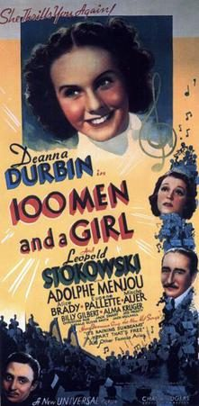

One Hundred Men and a Girl

Starring: Deanna Durbin, Adolphe Menjou, Eugene Pallette
Director: Henry Koster
Writer: Charles Kenyon, Bruce Manning, Hanns Kräly
Producer: Joe Pasternak
One Hundred Men and a Girl (styled 100 Men and a Girl in advertising) is a 1937 American musical comedy film directed by Henry Koster and starring Deanna Durbin and the maestro Leopold Stokowski. Written by Charles Kenyon, Bruce Manning, and James Mulhauser from a story by Hanns Kräly, the film is about the daughter of a struggling musician who forms a symphony orchestra consisting of his unemployed friends.
Trivia
- Won the Academy Award for Best Score, Adaptation or Treatment.
- Also nominated for: Academy Award for Best Picture; Academy Award for Best Story; Academy Award for Best Film Editing; Academy Award for Best Sound.
- Leopold Stokowski was, at the time of the film's release, co-conductor of the Philadelphia Orchestra with Eugene Ormandy.
- Political and artistic differences with the orchestra's board had already led Stokowski to allow Ormandy to assume a greater leadership role at the orchestra and eventually would lead Stokowski to break with the orchestra entirely.
- The music was recorded in multi-channel stereophonic sound but released in monaural sound; three years later Stokowski and the Philadelphia Orchestra appeared in the first feature film to be presented in stereo, Fantasia.
Previous Showings
9 Runs • 8 Festivals
4,115 tickets sold
Original Billings: 1 run (October 17, 1937)
Original Run: October 17, 1937 (Sunday - Wednesday)
All runs on record (9):
- October 17, 1937 (Sunday - Wednesday)Deanna Durbin, Adolphe Menjou
- March 19 - 20, 1991 · 275 ticketsw/ Stowaway
- April 28, 2001 · 546 ticketsWinter 2001w/ Rose of Washington Square
- December 6 - 7, 2003 · 543 ticketsSatyajit Ray 2003w/ Goopy Gyne Bagha Byne (Adventures of Goopy and Bagha)
- February 25 - 27, 2012 · 406 ticketsWinter 2012w/ Prelude to Fame
- December 1 - 3, 2012 · 540 ticketsDeanna Durbin Festivalw/ Three Smart Girls
- September 7 - 10, 2013 · 898 ticketsSummer 2013w/ It Started with Eve
- July 14 - 15, 2022 · 496 ticketsSummer 2022w/ It Started with Eve
- November 23 - 24, 2023 · 411 ticketsHoliday Favorites plus Deanna Durbinw/ Mad About Music